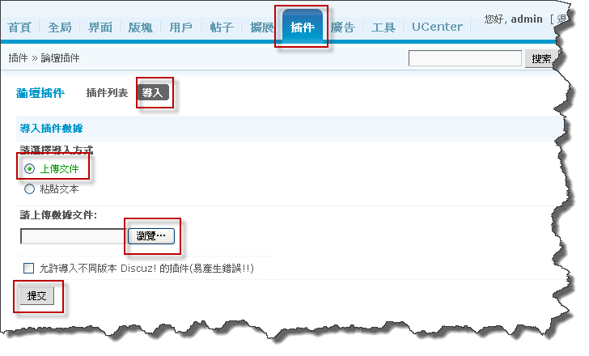
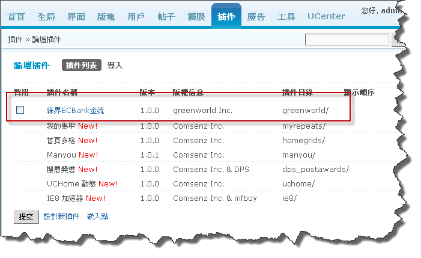
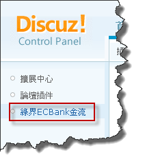
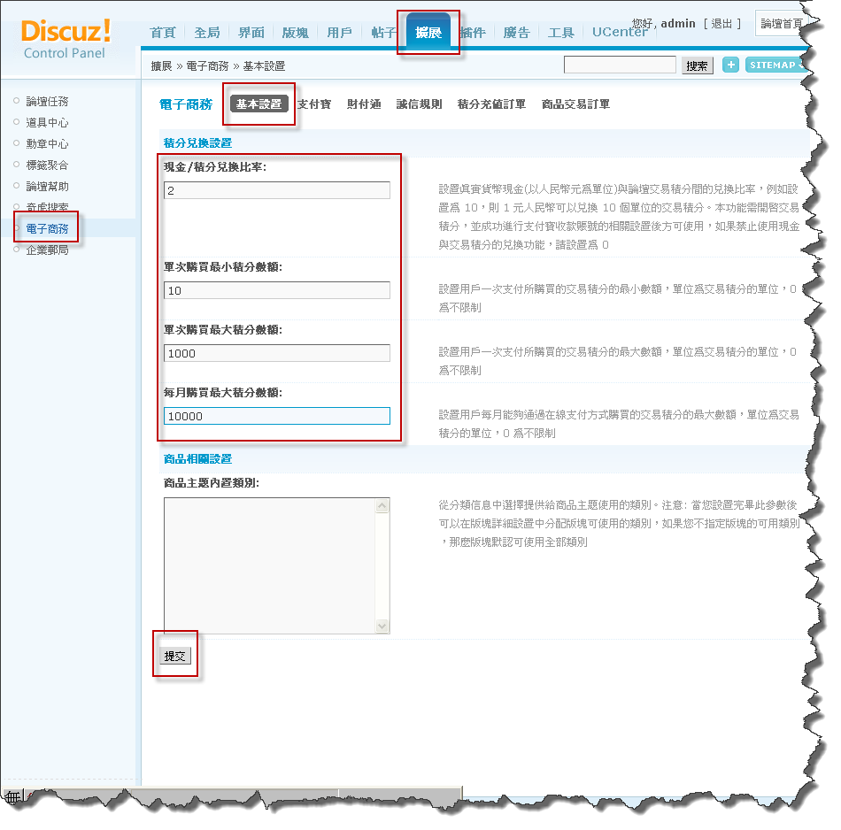
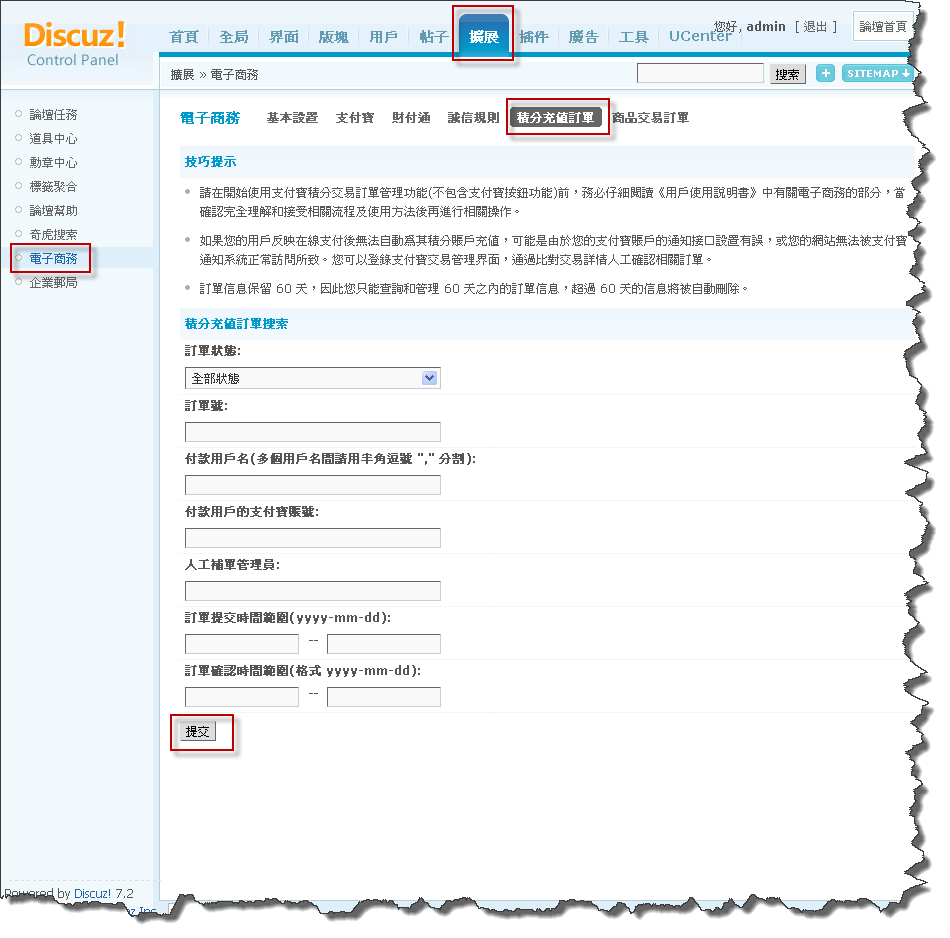
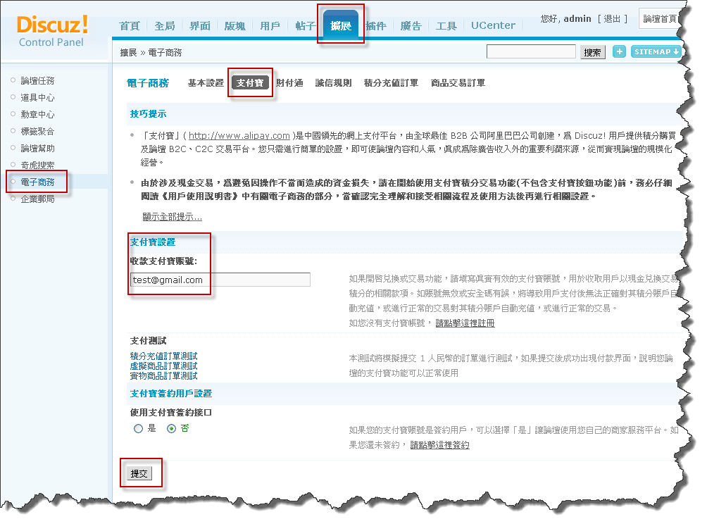
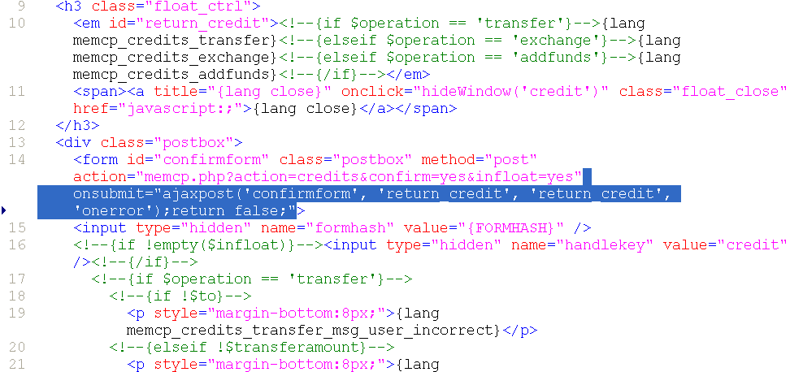

Step 1 - 插件安裝說明
請先安裝好Discuz論壇，安裝教學
注意：以下每個步驟皆是必需執行的，請不要忽略某一步驟，以免無法使用，謝謝。
1 請先解壓縮檔案
2 此時您可看見2個資料夾與1個檔案

3 將這2個資料夾利用ftp上傳至您所安裝的discuz主機上，並且覆蓋
4 使用管理者帳號登入後台，選擇『插件』後，再選擇『導入』，選擇『上傳文件』，按下『瀏覽…』鈕，選擇解壓縮後的discuz_plugin_greenworld.xml上傳，並按下『提交』

5 成功後即會出現如下圖所示

6 啟用綠界金流插件，勾選『啟用』後按下提交

7 啟用後，會如下圖示，左側選單多一個綠界金流的插件

8 設定綠界金流的資料，依照右側說明，輸入您在綠界ECBank或ECPay所申請的商店代號、加密私鑰，並填入您所要充值的收款方式後，按下提交

9 請至『全局』>『積分設置』設定您論壇的交易積分方式

10 請至『擴展』>『電子商務』>『基本設置』設定您論壇的積分兌換方式

11 請至『擴展』>『電子商務』>『積分充值訂單』的查詢，如果有會員有充值的話，即可查詢的到訂單

12 開啟充值功能，請至『擴展』>『電子商務』>『支付寶』，在支付寶設置中的收款支付寶賬號，輸入隨便一組email(此步驟一定要做)

13 修改檔案並利用ftp上傳至相對應的資料夾
一 請開啟templates\default\memcp_credits_action.htm
二 請在14行中，刪除如下圖所示的反白的程式碼

三 請先刪除約70行左右如下圖所示的反白的程式碼，並在該行增加如下圖所示的紅框程式碼

四 請開啟templates\default\templates.lang.php
五 請在2380行中，增加如下圖所示的反白的程式碼

六 將上述檔案修改完後，上傳覆蓋即可